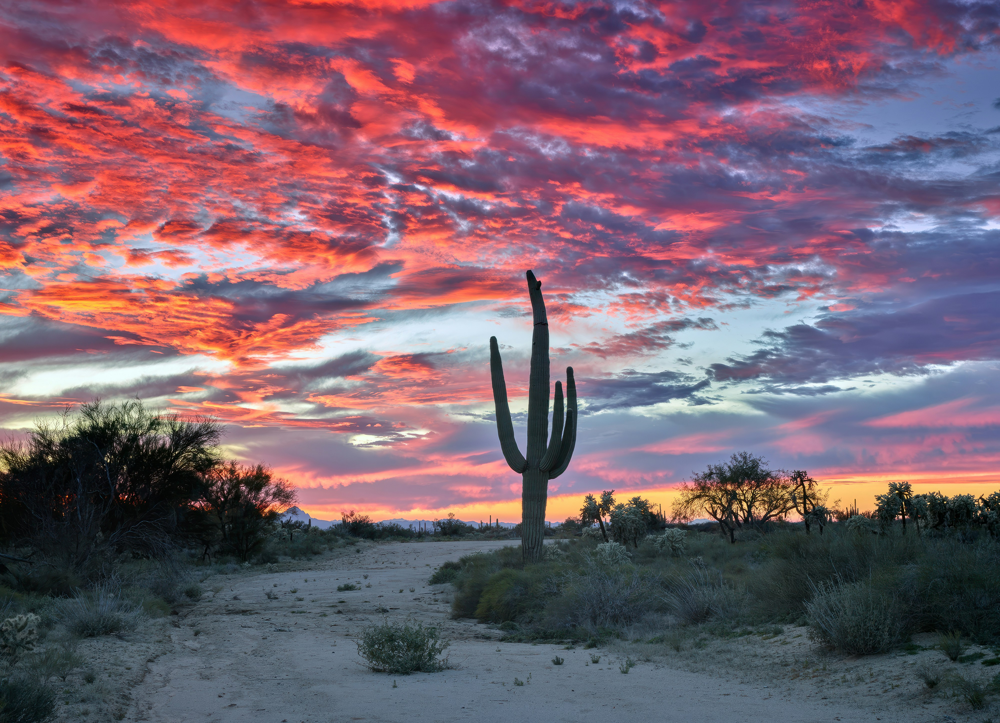
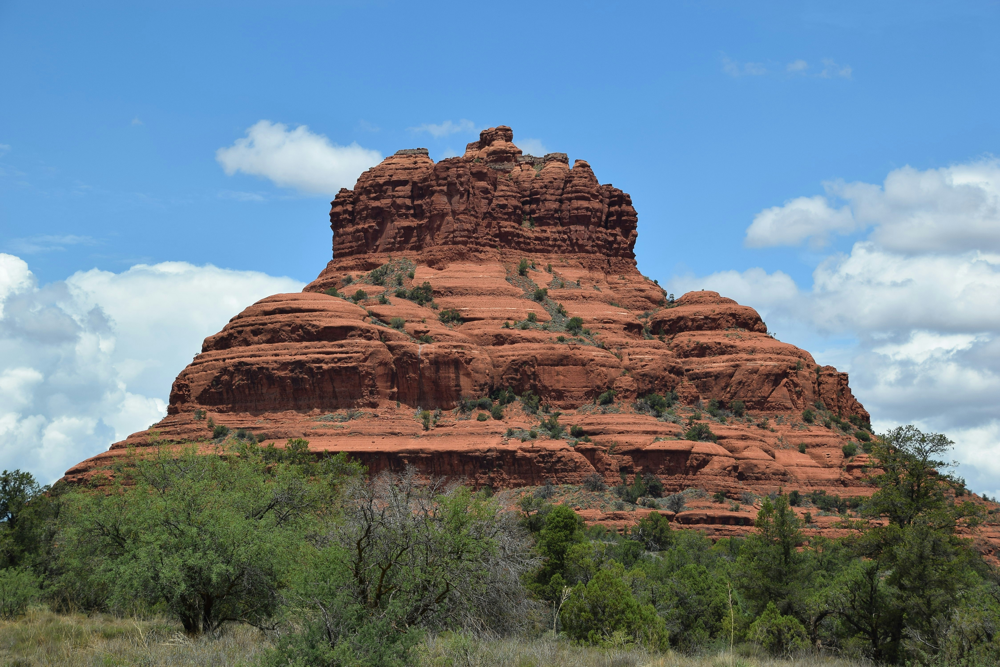

Explore the stunning beauty of Arizona's hiking trails through our photo gallery. From the rugged peaks of Camelback Mountain to the red rock formations of Sedona and the sweeping desert landscapes of South Mountain, Arizona offers some of the most breathtaking scenery in the American Southwest. Browse the photos below to get inspired for your next hike.
Desert Landscapes
Arizona's Sonoran Desert is one of the most biologically diverse deserts in the world. These photos capture the unique beauty of saguaro cacti, rocky terrain, and golden desert light that make Arizona hiking so unforgettable.

Sonoran Desert at sunset

Desert trail near Phoenix

View from Camelback Mountain
Sedona Red Rocks
Sedona is one of Arizona's most iconic destinations for hiking. The brilliant red sandstone formations create a dramatic backdrop for trails of all difficulty levels. The area is especially beautiful at sunrise and sunset when the rocks glow with deep orange and crimson colors.

Sedona red rock formations

Fay Canyon trail

Sedona overlook view
Wildlife on the Trail
Arizona's trails are home to an incredible variety of wildlife. Keep your eyes open for roadrunners, Gila woodpeckers, javelinas, coyotes, and countless species of birds. Always observe wildlife from a safe distance and never feed or approach wild animals on the trail.
For more information on Arizona wildlife and conservation efforts, visit the Arizona State Parks website.